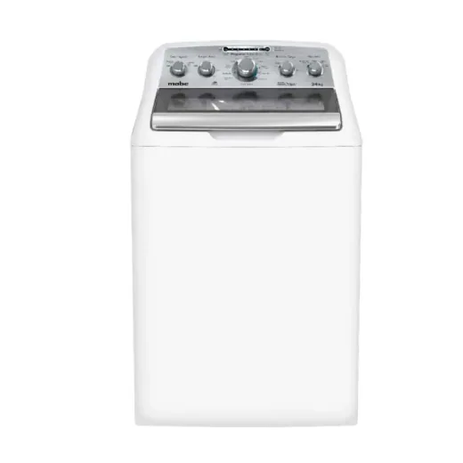
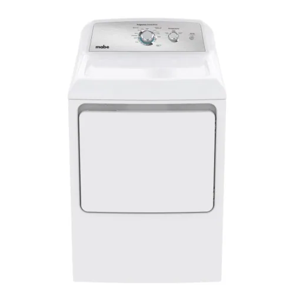
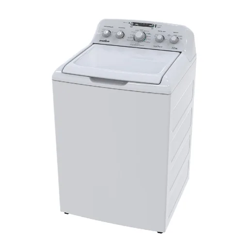

Inicio › Lavadoras y secadoras

Mabe · Modelo LMA70214VBAB0
Lavadora Mabe · 20 kg · Carga superior · LMA70214VBAB0
L 14,825
En Walmart
Precio en cada tienda
| Tienda | Precio | Antes | Disponibilidad | |
|---|---|---|---|---|
| Walmart | L 14,825 | — | Disponible | Ver en tienda › |
Precios referenciales tomados de cada tienda el 28 de noviembre de 2026. El precio válido es el que muestra la tienda al comprar.
Historial de precio
Lo seguimos desde el 1 de noviembre. Precio más bajo registrado: L 14,825 en Walmart (1 de noviembre), igual que hoy. El precio no ha cambiado en ese tiempo.
Características
| Color | Blanco |
|---|---|
| Marca | Mabe |
| Medida de altura | 108.9 cm |
| Medida de ancho | 67.8 cm |
| Medida de peso | 51.6 kg aproximadamente |
| Medida de profundidad | 65.5 cm |
| Modelo o serie del producto | LMA70214VBAB0 |
| País de Origen - Ensamblaje | México |
| Capacidad | 20 kg |
| Material | Acero inoxidable y vidrio |
| Uso recomendado | Lavar ropa, toallas, sábanas, jeans y prendas de uso diario |
| Voltaje | 127 V |
| Tipo de tecnología de artículo | Aqua Saver Green con ciclos automáticos y sanitizado |
Descripción
Disfruta de la Lavadora automática Mabe LMA70214VBAB0 de 20 kg con carga superior, una opción práctica para hogares con rutinas de lavado frecuentes y cargas familiares de mayor volumen. Su capacidad permite lavar prendas, sábanas, toallas, cobijas ligeras y textiles compatibles, siguiendo los ciclos y recomendaciones del fabricante durante el uso diario. Puede instalarse en áreas de lavandería, cuartos de servicio o espacios adecuados con conexión de agua, drenaje y electricidad. Es una alternativa conveniente para quienes buscan un electrodoméstico funcional para el cuidado diario de la ropa. Se recomienda instalarla sobre una superficie nivelada, no exceder la capacidad indicada, usar el detergente adecuado y limpiar los filtros periódicamente.
Otros lavadoras y secadoras Mabe
 Secadora Mabe · 22 kg · Eléctrica · SME47N8MSBBTL 13,997En La Curacao
Secadora Mabe · 22 kg · Eléctrica · SME47N8MSBBTL 13,997En La Curacao Lavadora Mabe · 24 kg · Carga superior · LMA74215WBAB0L 13,997En La Curacao
Lavadora Mabe · 24 kg · Carga superior · LMA74215WBAB0L 13,997En La Curacao
Lavadora Mabe · 24 kg · LMA74215WBAB1L 13,990En 4 tiendas · más barato en Diunsa Lavadora Mabe · 22 kgL 12,999En Lady Lee
Lavadora Mabe · 22 kgL 12,999En Lady Lee Secadora Mabe · 20 kg · A gasL 12,999En Lady Lee
Secadora Mabe · 20 kg · A gasL 12,999En Lady Lee
Secadora Mabe · 20 kg · SME26N5MNBBT0L 12,990En 3 tiendas · más barato en Diunsa
Lavadora Mabe · 22 kg · LMA72215CBAB0L 12,690En 3 tiendas · más barato en Diunsa Secadora Mabe · 20 kg · EléctricaL 12,499.01En Lady Lee
Secadora Mabe · 20 kg · EléctricaL 12,499.01En Lady Lee